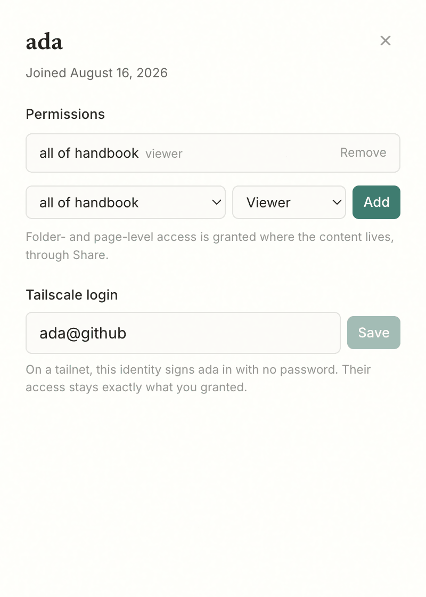

On your tailnet
The recommended way to share a Hanji instance with a team is not a domain, a
certificate, and a public endpoint. It is a tailnet:
the instance runs on one box, tailscale serve fronts it, and it never
touches the public internet. That sentence is the whole security posture, and
it is a sentence you can say to an administrator with a straight face.
Tailscale mode adds the part that makes it feel finished: the tailnet already knows who is knocking, so Hanji stops asking.
Turn it on
One variable, plus the serve command:
export HANJI_TAILSCALE_OWNER=you@github # your own tailnet login
node_modules/.bin/next start -H 127.0.0.1 -p 4100
tailscale serve --bg 4100
Setting HANJI_TAILSCALE_OWNER does two things at once. It tells Hanji to
trust the identity headers tailscale serve attaches, and it names the
tailnet login that is the owner - you. Open the instance from any device on
your tailnet and you are simply in, as the owner, no password asked.
Let people in
Everyone else maps through Settings → People. Open a person's sheet and link their tailnet login in the Tailscale field. From then on, that identity signs them in with no password - and that is all it does. What they can see and propose stays exactly the grants you gave them; the tailnet answers who they are, never what they may read. See Permissions.

An unlinked visitor is told plainly: the login page names the tailnet identity it saw and says the owner has not linked it yet. The password form still works underneath, always - a linked identity is a convenience on top of sessions, not a replacement for them.
This is also how you invite someone from outside your team: share your node with them in Tailscale, add them as a person, link their login. Share access, not code.
The contract
The headers are trustworthy for exactly one reason: tailscale serve strips
any inbound Tailscale-User-* headers and sets its own. So the mode is safe
only while the port is reachable exclusively through tailscale serve - bind
127.0.0.1, as above. If the app is reachable any other way, anyone on that
path can type the header themselves, and HANJI_TAILSCALE_OWNER must stay
unset. Hanji will never turn this on by itself.
Two edges worth knowing. Signing out on a tailnet is a shrug: clearing the session lands you right back in through the header, because the tailnet still knows you. And agents are untouched by all of this - the MCP surface stays bearer-token only, and a tailnet identity never grants an agent anything.
Why this is not SSO
It is better, for the case it covers. On a tailnet you do not integrate an identity provider; you already have one, and it is the network itself. Single sign-on for organizations that live behind Okta or Google Workspace remains where Where we are puts it: the paid seam, later. This mode is for the team that wants the writing surface working today, with nobody typing passwords, on infrastructure they already trust.